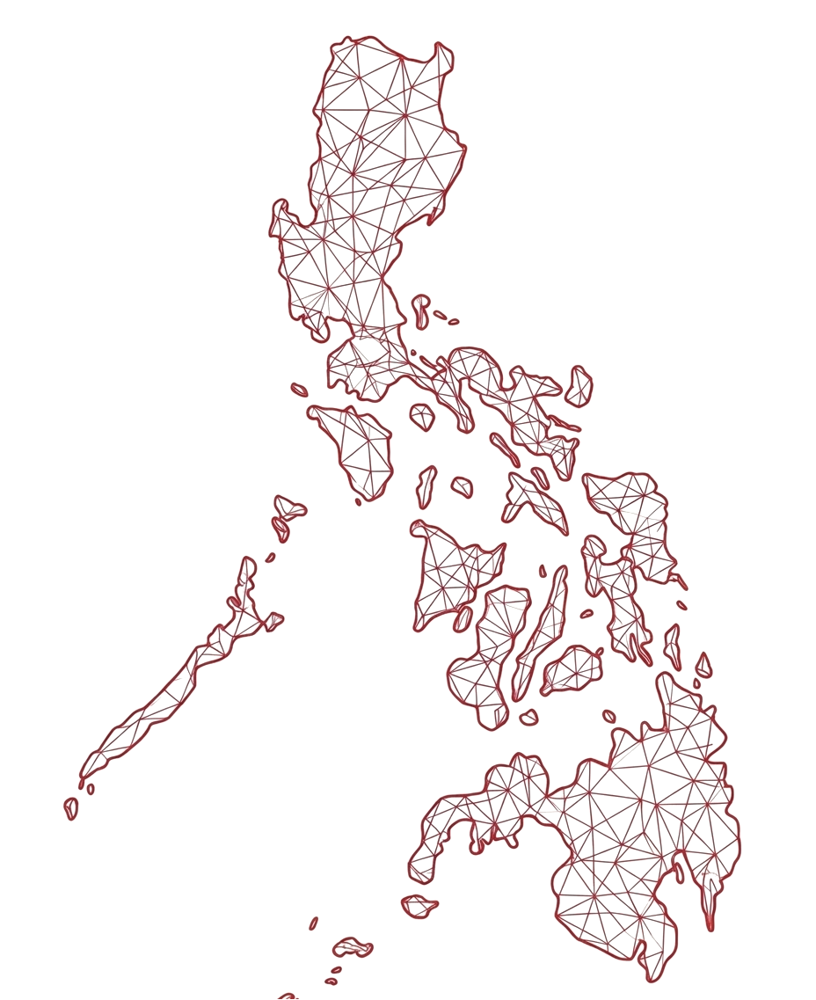

Post food
Add the food name, quantity, expiration, and pickup details.
FRSS connects people with safe extra food in their community. Post
what you can share, discover available food, and coordinate pickup.
Turn on your location to see the closest available food.
Add the food name, quantity, expiration, and pickup details.
Browse available food and claim a quantity you can pick up.
Follow the pickup details and keep track of your claim status.
Mark the rescue complete so the transaction remains traceable.
Real people using FRSS to share extra food and help their community.
“This website makes donating food feel so easy and meaningful. Instead of letting extra food go to waste, I can share it with someone who needs it.”
“FRSS makes it simple to give what you have. Even a small food donation can become a helpful meal for someone in the community.”
“I love how useful this platform is. It connects people who have extra food with people who can actually use it.”
“Donating feels more purposeful when you know your extra food can help someone nearby. I would definitely encourage others to try FRSS.”
“A practical way to reduce food waste while helping people. Posting a donation only takes a few moments.”
Give extra food and help your community reduce food waste.

Yes. The same registered user account can post extra food and claim available food.
No. FRSS is designed to prevent users from claiming their own food posts.
The remaining quantity becomes zero and the food post is no longer available for claiming.
No. Pickup is personally arranged and completed by the users involved.